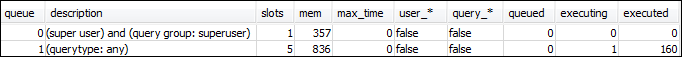

Terjemahan disediakan oleh mesin penerjemah. Jika konten terjemahan yang diberikan bertentangan dengan versi bahasa Inggris aslinya, utamakan versi bahasa Inggris.
Bagian 1: Memahami perilaku pemrosesan antrian default
Sebelum Anda mulai mengonfigurasi WLM manual, sangat berguna untuk memahami perilaku default pemrosesan antrian di Amazon Redshift. Di bagian ini, Anda membuat dua tampilan basis data yang mengembalikan informasi dari beberapa tabel sistem. Kemudian Anda menjalankan beberapa kueri pengujian untuk melihat bagaimana kueri diarahkan secara default. Untuk informasi selengkapnya tentang tabel sistem, lihatTabel sistem dan tampilan referensi.
Langkah 1: Buat tampilan WLM_QUEUE_STATE_VW
Pada langkah ini, Anda membuat tampilan yang disebut WLM_QUEUE_STATE_VW. Pandangan ini mengembalikan informasi dari tabel sistem berikut.
Anda menggunakan tampilan ini di seluruh tutorial untuk memantau apa yang terjadi pada antrian setelah Anda mengubah konfigurasi WLM. Tabel berikut menjelaskan data yang WLM_QUEUE_STATE_VW tampilan kembali.
| Kolom | Deskripsi |
|---|---|
| antrean | Jumlah yang terkait dengan baris yang mewakili antrian. Nomor antrian menentukan urutan antrian dalam database. |
| deskripsi | Nilai yang menjelaskan apakah antrian hanya tersedia untuk grup pengguna tertentu, untuk grup kueri tertentu, atau semua jenis kueri. |
| slot | Jumlah slot yang dialokasikan ke antrean. |
| mem | Jumlah memori, dalam MB per slot, dialokasikan ke antrean. |
| max_execution_waktu | Jumlah waktu kueri diizinkan berjalan sebelum diakhiri. |
| pengguna_* | Nilai yang menunjukkan apakah karakter wildcard diizinkan dalam konfigurasi WLM untuk mencocokkan grup pengguna. |
| query_* | Nilai yang menunjukkan apakah karakter wildcard diperbolehkan dalam konfigurasi WLM untuk mencocokkan kelompok kueri. |
| mengantri | Jumlah kueri yang sedang menunggu dalam antrean untuk diproses. |
| menghukum mati | Jumlah kueri yang saat ini berjalan. |
| dieksekusi | Jumlah query yang telah dijalankan. |
Untuk membuat tampilan WLM_QUEUE_STATE_VW
-
Buka Amazon Redshift RSQL dan sambungkan ke database sampel TICKIT Anda. Jika Anda tidak memiliki basis data ini, lihatPrasyarat.
-
Jalankan kueri berikut untuk membuat tampilan WLM_QUEUE_STATE_VW.
create view WLM_QUEUE_STATE_VW as select (config.service_class-5) as queue , trim (class.condition) as description , config.num_query_tasks as slots , config.query_working_mem as mem , config.max_execution_time as max_time , config.user_group_wild_card as "user_*" , config.query_group_wild_card as "query_*" , state.num_queued_queries queued , state.num_executing_queries executing , state.num_executed_queries executed from STV_WLM_CLASSIFICATION_CONFIG class, STV_WLM_SERVICE_CLASS_CONFIG config, STV_WLM_SERVICE_CLASS_STATE state where class.action_service_class = config.service_class and class.action_service_class = state.service_class and config.service_class > 4 order by config.service_class; -
Jalankan kueri berikut untuk melihat informasi yang berisi tampilan.
select * from wlm_queue_state_vw;Berikut ini adalah contoh hasil.

Langkah 2: Buat tampilan WLM_QUERY_STATE_VW
Pada langkah ini, Anda membuat tampilan yang disebut WLM_QUERY_STATE_VW. Pandangan ini mengembalikan informasi dari tabelSTV_WLM_QUERY_STATE sistem.
Anda menggunakan tampilan ini di seluruh tutorial untuk memantau kueri yang sedang berjalan. Tabel berikut menjelaskan data yang WLM_QUERY_STATE_VW tampilan kembali.
| Kolom | Deskripsi |
|---|---|
| kueri | ID query. |
| antrean | Nomor antrian. |
| slot_count | Jumlah slot dialokasikan untuk query. |
| start_waktu | Waktu kueri dimulai. |
| status | Keadaan query, seperti mengeksekusi. |
| antrean_waktu | Jumlah mikrodetik yang dihabiskan kueri dalam antrian. |
| exec_waktu | Jumlah mikrodetik yang kueri telah berjalan. |
Untuk membuat tampilan WLM_QUERY_STATE_VW
-
Dalam RSQL, jalankan query berikut untuk membuat tampilan WLM_QUERY_STATE_VW.
create view WLM_QUERY_STATE_VW as select query, (service_class-5) as queue, slot_count, trim(wlm_start_time) as start_time, trim(state) as state, trim(queue_time) as queue_time, trim(exec_time) as exec_time from stv_wlm_query_state; -
Jalankan kueri berikut untuk melihat informasi yang berisi tampilan.
select * from wlm_query_state_vw;Berikut ini adalah contoh hasil.

Langkah 3: Jalankan kueri pengujian
Pada langkah ini, Anda menjalankan kueri dari beberapa koneksi di RSQL dan meninjau tabel sistem untuk menentukan bagaimana kueri diarahkan untuk diproses.
Anda memerlukan dua jendela RSQL yang terbuka:
-
Di jendela RSQL 1, Anda menjalankan kueri yang memantau keadaan antrian dan kueri menggunakan tampilan yang sudah Anda buat dalam tutorial ini.
-
Di jendela RSQL 2, Anda menjalankan kueri jangka panjang untuk mengubah hasil yang Anda temukan di jendela RSQL 1.
Untuk menjalankan kueri pengujian
-
Buka dua jendela RSQL. Jika Anda sudah memiliki satu jendela terbuka, Anda hanya perlu membuka jendela kedua. Anda dapat menggunakan akun pengguna yang sama untuk kedua koneksi ini.
-
Di jendela RSQL 1, jalankan kueri berikut.
select * from wlm_query_state_vw;Berikut ini adalah contoh hasil.

Query ini mengembalikan hasil referensial diri. Query yang sedang berjalan adalah pernyataan SELECT dari tampilan ini. Sebuah query pada tampilan ini selalu mengembalikan setidaknya satu hasil. Bandingkan hasil ini dengan hasil yang terjadi setelah memulai kueri yang sudah berjalan lama di langkah berikutnya.
-
Di jendela RSQL 2, jalankan kueri dari database sampel TICKIT. Kueri ini harus berjalan sekitar satu menit sehingga Anda punya waktu untuk menjelajahi hasil tampilan WLM_QUEUE_STATE_VW dan tampilan WLM_QUERY_STATE_VW yang Anda buat sebelumnya. Dalam beberapa kasus, Anda mungkin menemukan bahwa kueri tidak berjalan cukup lama bagi Anda untuk menanyakan kedua tampilan. Dalam kasus ini, Anda dapat meningkatkan nilai filter
l.listiduntuk membuatnya berjalan lebih lama.catatan
Untuk mengurangi waktu eksekusi kueri dan meningkatkan kinerja sistem, Amazon Redshift menyimpan hasil jenis kueri tertentu dalam memori pada node pemimpin. Ketika hasil caching diaktifkan, kueri berikutnya berjalan lebih cepat. Untuk mencegah query dari berjalan dengan cepat, menonaktifkan hasil caching untuk sesi saat ini.
Untuk mematikan hasil caching untuk sesi saat ini, mengaturenable_result_cache_for_session parameter untuk
off, seperti yang ditunjukkan berikut.set enable_result_cache_for_session to off;Di jendela RSQL 2, jalankan kueri berikut.
select avg(l.priceperticket*s.qtysold) from listing l, sales s where l.listid < 100000; -
Di jendela RSQL 1, kueri WLM_QUEUE_STATE_VW dan WLM_QUERY_STATE_VW dan bandingkan hasilnya dengan hasil sebelumnya.
select * from wlm_queue_state_vw; select * from wlm_query_state_vw;Berikut ini adalah contoh hasil.


Perhatikan perbedaan berikut antara kueri Anda sebelumnya dan hasil dalam langkah ini:
-
Ada dua baris sekarang di WLM_QUERY_STATE_VW. Salah satu hasilnya adalah query self-referential untuk menjalankan operasi SELECT pada tampilan ini. Hasil kedua adalah query yang berjalan lama dari langkah sebelumnya.
-
Kolom pelaksana di WLM_QUEUE_STATE_VW telah meningkat dari 1 menjadi 2. Entri kolom ini berarti bahwa ada dua kueri yang berjalan dalam antrian.
-
Kolom yang dieksekusi bertambah setiap kali Anda menjalankan kueri dalam antrian.
Tampilan WLM_QUEUE_STATE_VW berguna untuk mendapatkan tampilan keseluruhan antrian dan berapa banyak kueri yang diproses di setiap antrian. Tampilan WLM_QUERY_STATE_VW berguna untuk mendapatkan tampilan yang lebih rinci tentang kueri individu yang sedang berjalan.